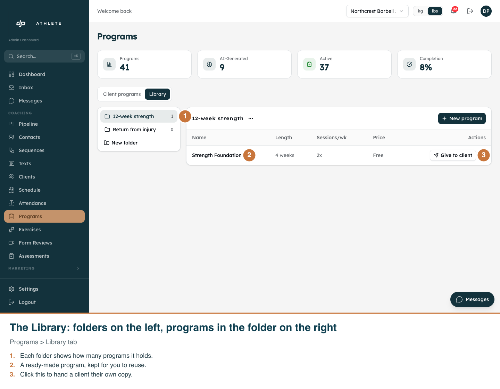
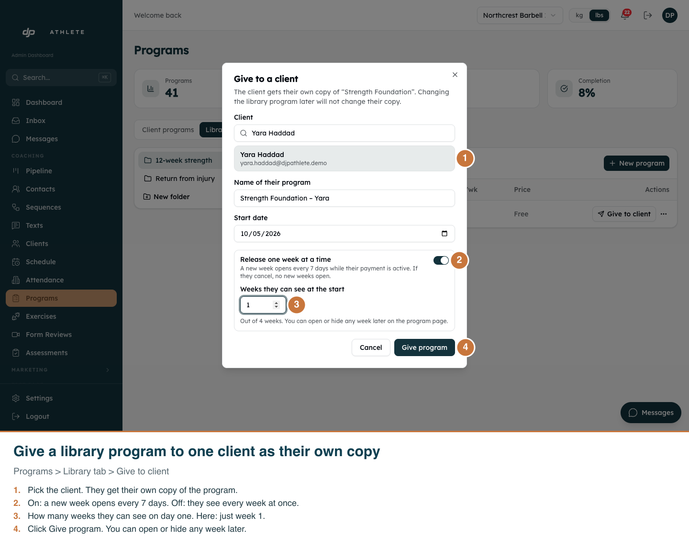
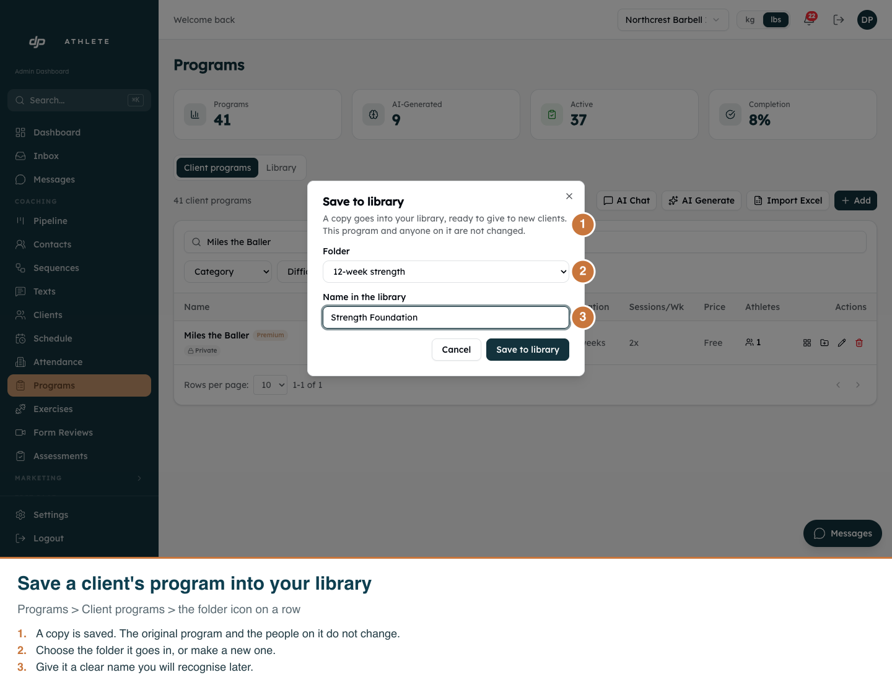
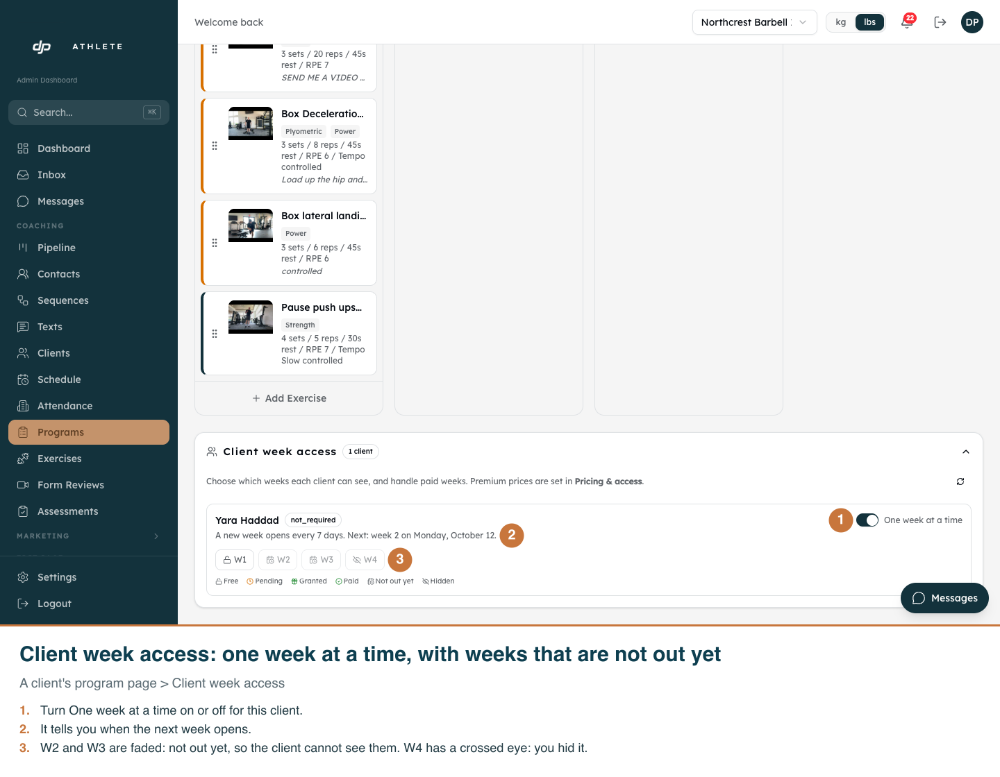
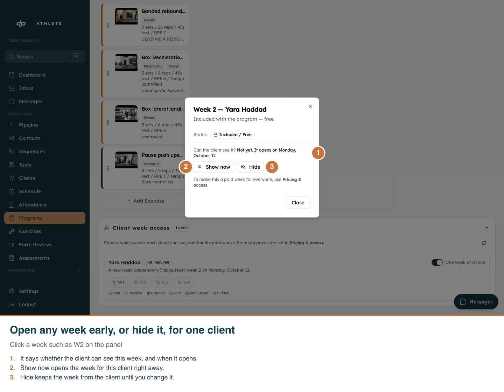
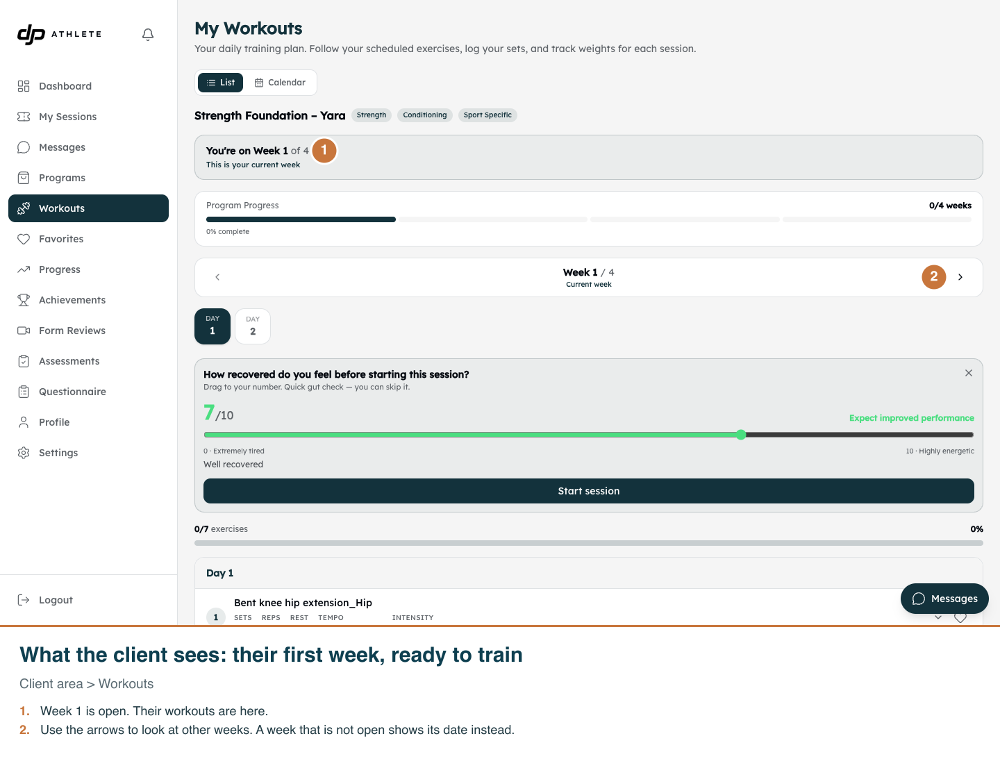
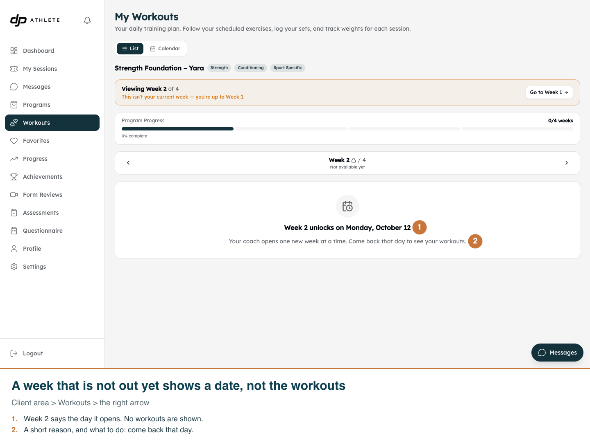
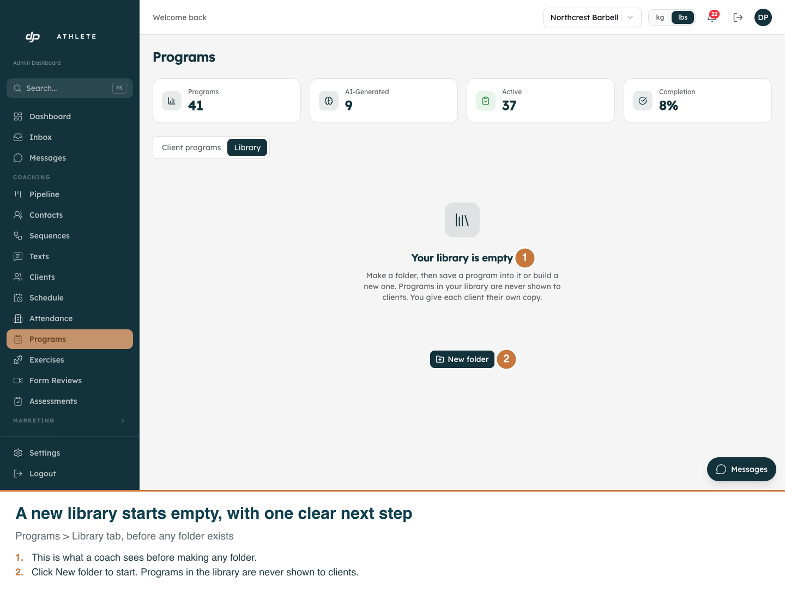
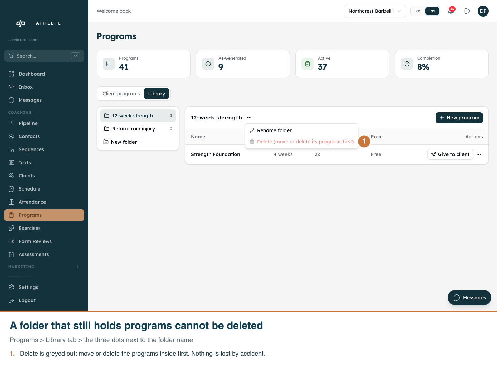

Program library and weekly release
Real app, development clone, light mode only (neither the admin nor the client area has a dark mode).

01. Folders hold your ready-made programs. Programs here are never shown to clients until you give one.

02. Pick a client, choose how many weeks they see first, and give the program. They get their own copy.

03. Save any client program as a ready-made copy in a folder. The original stays as it was.

04. The coach sees every week for this client. Faded means not out yet. A crossed eye means hidden by you.

05. Open a week early with Show now, or keep it from the client with Hide.

06. The client sees only the weeks you have opened. Week 1 is ready to train.

07. Week 2 is not out yet, so the client sees the date it opens instead of the workouts.

08. Before you make a folder, the Library tab is empty and tells you what to do first.

09. You cannot delete a folder that still has programs in it. The menu says what to do first.